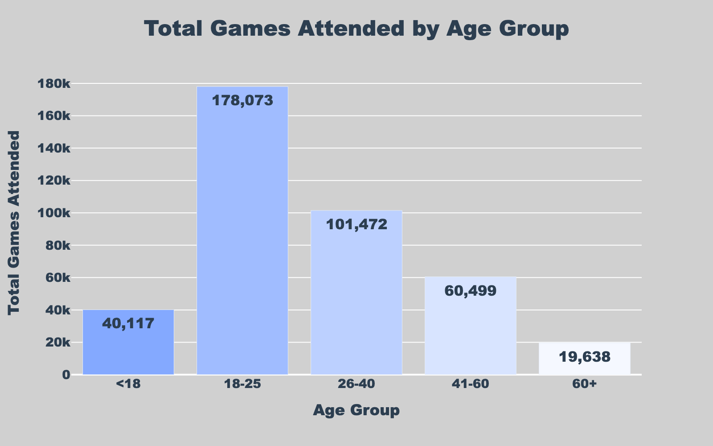
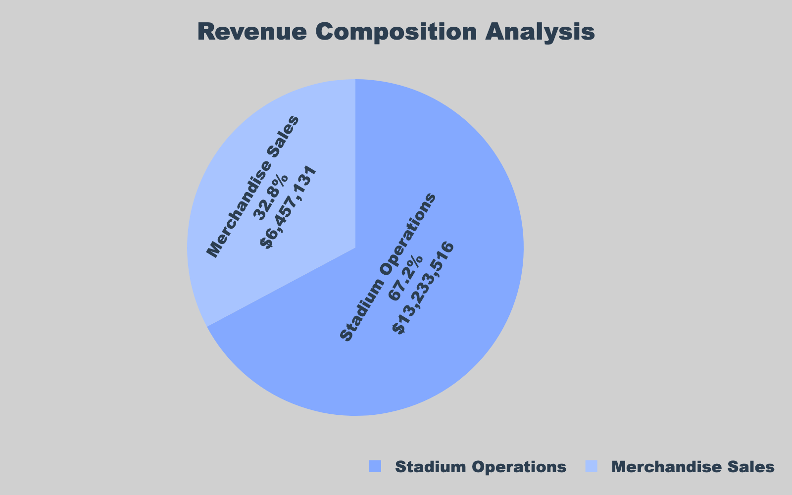
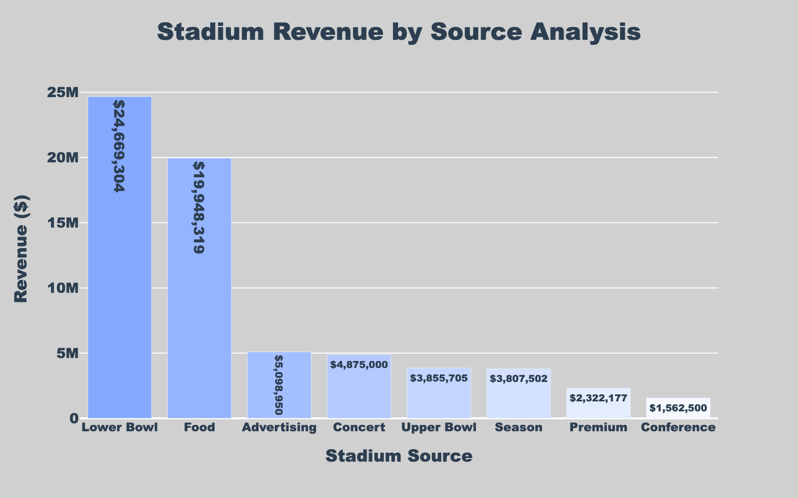
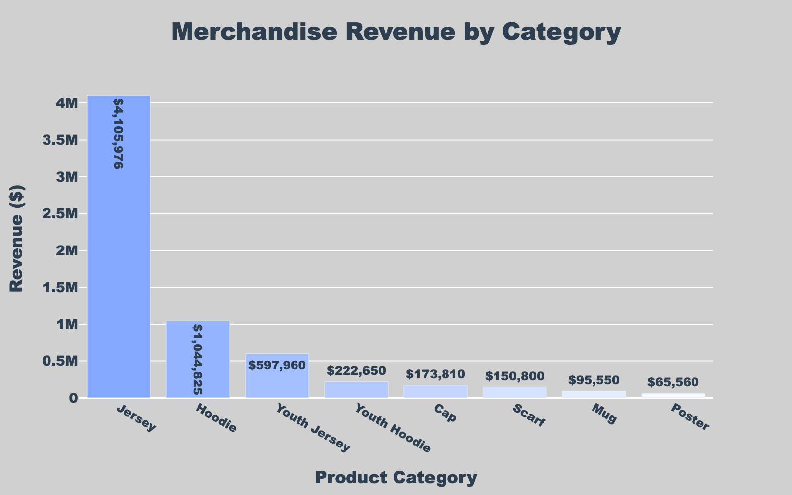
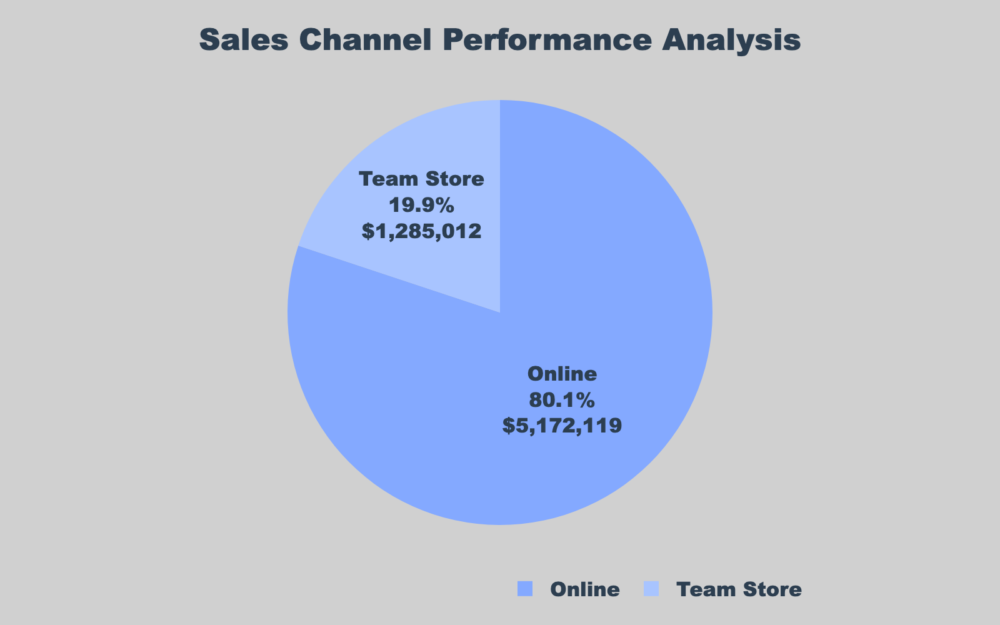
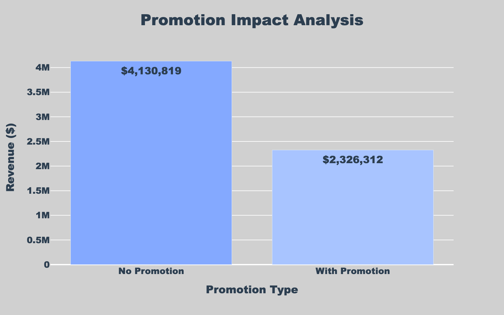
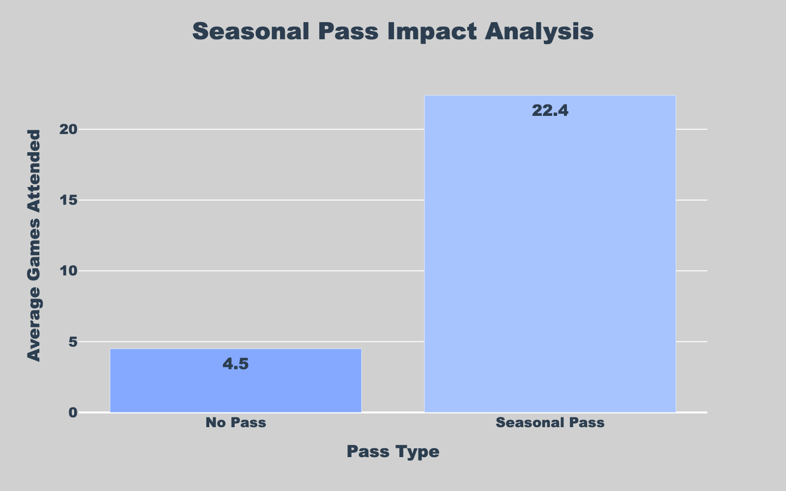

Executive Summary
Vancouver City FC faces critical challenges in revenue diversification and fan engagement optimization. Our comprehensive analysis of stadium operations, merchandise sales, and fanbase data reveals significant opportunities for revenue growth through strategic interventions across all three revenue streams.
Key Findings
- Revenue Gap: Current revenue of $19.7M falls significantly below historical $60M levels
- Demographic Opportunity: 18-25 age group represents 178,073 total games attended - largest engagement segment
- Channel Imbalance: Online merchandise sales ($5.2M) significantly outperform team store ($1.3M)
- Seasonal Pass Impact: Pass holders attend 5x more games (22.4 vs 4.5 average)
- Stadium Underutilization: Lower bowl generates $24.7M while premium services only $2.3M
Fan Engagement Analysis
Total Games Attended by Age Group
Analysis of fan engagement patterns across different demographic segments

Critical Insights
- 18-25 Dominance: This demographic represents 178,073 total games attended - nearly 5x more than the 60+ group (19,638 games)
- Youth Potential: Under-18 segment shows strong engagement with 40,117 games - future fan development opportunity
- Core Demographic: 26-40 age group provides 101,472 games - represents purchasing power and stability
- Engagement Gap: 60+ demographic shows lowest engagement - potential for senior-friendly initiatives
The data reveals a clear demographic concentration in younger age groups, with the 18-25 segment driving the majority of total attendance. This suggests that Vancouver City FC's current fan base is heavily skewed toward younger demographics, presenting both opportunities and challenges for long-term sustainability.
Revenue Stream Analysis
Revenue Composition Breakdown
Current revenue distribution between stadium operations and merchandise sales

Revenue Stream Insights
- Stadium Dominance: Stadium operations generate $13.2M (67% of total revenue)
- Merchandise Opportunity: Merchandise sales at $6.5M (33%) - significant growth potential
- Revenue Concentration Risk: Heavy dependence on stadium operations creates vulnerability
- Diversification Need: Merchandise represents untapped potential for revenue growth
The current revenue structure shows a concerning over-reliance on stadium operations, which are vulnerable to attendance fluctuations. The merchandise segment, while smaller, presents significant opportunities for growth through improved online presence, international expansion, and targeted marketing campaigns.
Stadium Operations Analysis
Stadium Revenue by Source
Detailed breakdown of stadium revenue streams and optimization opportunities

Stadium Revenue Insights
- Lower Bowl Dominance: $24.7M revenue - represents core fan base and premium seating
- Food & Beverage: $19.9M revenue - significant opportunity for menu optimization and pricing
- Advertising Potential: $5.1M revenue - room for growth through digital advertising and partnerships
- Premium Services: Only $2.3M from premium/conference - significant untapped potential
- Concert Revenue: $4.9M from non-matchday events - diversification opportunity
Stadium operations show clear opportunities for optimization. The lower bowl's dominance suggests strong core fan support, while food & beverage revenue indicates high in-stadium spending. However, premium services and advertising represent significant untapped potential for revenue growth.
Merchandise Sales Analysis
Merchandise Revenue by Category
Product performance analysis and category optimization opportunities

Product Category Insights
- Jersey Dominance: $4.1M revenue (63% of merchandise) - core product performance
- Youth Market: Youth jersey ($598K) and hoodie ($223K) show strong family engagement
- Accessory Opportunity: Cap ($174K), scarf ($151K) - potential for expansion
- Premium Items: Mug ($96K), poster ($66K) - limited revenue impact
Merchandise sales reveal a clear product hierarchy with jerseys dominating revenue. The strong performance of youth products indicates successful family engagement, while accessories present opportunities for revenue diversification. The limited impact of premium items suggests potential for product line expansion.
Sales Channel Performance
Online vs team store performance analysis

Channel Performance Insights
- Online Dominance: $5.2M revenue (80% of merchandise) - digital transformation success
- Team Store Underperformance: $1.3M revenue (20%) - significant improvement opportunity
- Digital First Strategy: Online channel effectiveness suggests mobile-first approach
- In-Store Experience: Team store optimization needed for matchday sales
Promotion Impact Analysis
Effectiveness of promotional campaigns on merchandise sales

Promotion Effectiveness
- Promotion Success: Promoted items generate $2.3M vs $4.1M non-promoted
- Campaign Impact: Promotions show 36% of total merchandise revenue
- Marketing ROI: Promotional campaigns demonstrate clear revenue impact
- Expansion Opportunity: Increased promotion frequency could drive higher sales
Seasonal Pass Impact Analysis
Seasonal Pass vs Regular Attendance
Impact of seasonal passes on fan engagement and attendance patterns

Seasonal Pass Insights
- Massive Engagement Boost: Pass holders attend 22.4 games vs 4.5 for regular fans
- 5x Attendance Multiplier: Seasonal passes create dramatically higher engagement
- Revenue Stability: Pass holders provide predictable, recurring revenue
- Fan Loyalty: Higher attendance suggests stronger emotional connection
The seasonal pass program demonstrates exceptional effectiveness in driving fan engagement. The 5x attendance multiplier suggests that pass holders represent the club's most valuable fan segment, providing both higher revenue per fan and greater long-term loyalty. This data strongly supports expanding the seasonal pass program.
Strategic Recommendations
Immediate Actions (0-6 months)
- Expand Seasonal Pass Program: Target 18-25 demographic with student pricing and payment plans
- Optimize Online Merchandise: Enhance mobile experience, implement AI recommendations, expand international shipping
- Stadium Food & Beverage Upgrade: Modernize concessions, implement mobile ordering, expand premium options
- Digital Advertising Expansion: Increase digital advertising revenue through stadium screens and mobile apps
Medium-term Initiatives (6-18 months)
- Premium Services Development: Create exclusive lounges, VIP experiences, and corporate packages
- Youth Development Program: Leverage strong youth engagement for long-term fan development
- International Expansion: Develop global merchandise strategy and international fan programs
- Stadium Event Diversification: Increase non-matchday events, concerts, and community programs
Long-term Strategy (18+ months)
- Revenue Diversification: Achieve 40% merchandise, 50% stadium, 10% other revenue split
- Global Fan Base: Establish international fan clubs and localized merchandise
- Technology Integration: Implement smart stadium features, AR experiences, and data-driven personalization
- Sustainability Focus: Develop eco-friendly merchandise and carbon-neutral operations
Projected Financial Impact
Revenue Growth Projections
Year 1 Target: $35M total revenue (78% increase from current $19.7M)
Year 2 Target: $50M total revenue (154% increase)
Year 3 Target: $65M total revenue (230% increase, exceeding historical $60M)
Based on our analysis, implementing the recommended strategies could restore Vancouver City FC to its historical revenue levels within 3 years, with significant potential for exceeding previous performance through improved operational efficiency and diversified revenue streams.